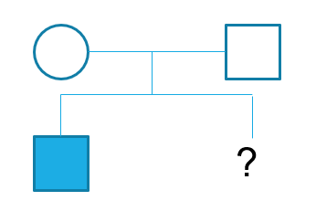

Digite a senha para iniciar a simulação.
Senha incorreta.
Paciente: Lactente (1 ano e 6 meses, masculino)
Lactente do sexo masculino, atualmente com 1 ano e 6 meses de idade. Encaminhado ao serviço de genética médica para investigação de condição neurológica com provável base genética.
Os pais relatam que, desde os primeiros meses de vida, o bebê apresentava menor tônus muscular do que o esperado. Aos 4 meses, ele ainda não sustentava bem a cabeça, e aos 6 meses não rolava nem fazia movimentos coordenados com os braços e pernas. Aos 8 meses, diante da persistência do atraso motor, a família procurou atendimento pediátrico, sendo então iniciado acompanhamento neurológico.
Com 10 meses, o paciente permanecia hipotônico axialmente, sem conseguir sentar sem apoio, e passou a apresentar rigidez nos membros inferiores (espasticidade). Os pais descrevem que ele "estica as pernas e cruza uma sobre a outra" quando tentam colocá-lo de pé com suporte. Também foi notada maior rigidez nos braços e aumento progressivo da resposta aos reflexos.
A linguagem é ausente até o momento; não há balbucios significativos. Os pais relatam que ele sorri pouco, mas frequentemente emite sons repetitivos e apresenta episódios de risadas imotivadas. Interage com os familiares de forma limitada, respondendo ocasionalmente a estímulos visuais e auditivos. Movimentos repetitivos das mãos, como torcer os dedos ou bater palmas de maneira estereotipada, são observados diariamente.
Aos 14 meses, teve um episódio de convulsão febril. Embora o episódio não tenha se repetido até o momento, permanece em investigação com EEG agendado. Atualmente, aos 18 meses, o paciente não consegue andar, engatinhar ou se sustentar em pé mesmo com apoio. Sustenta a cabeça com dificuldade e apresenta espasticidade mais evidente em membros inferiores, com padrão em tesoura, clônus bilateral e sinal de Babinski positivo.
Ressonância magnética de crânio (15 meses): afinamento do corpo caloso, hipomielinização da substância branca periventricular e ventriculomegalia colpocefálica.
EEG: em agendamento.

Em vista do conjunto de achados clínicos e radiológicos, tais como atraso motor global, espasticidade com padrão em membros inferiores e alterações neuroimagem, o caso é considerado compatível com uma forma de paraplegia espástica hereditária de início precoce. Solicita-se investigação molecular específica para elucidação diagnóstica.
O orçamento é limitado, escolha com sabedoria.
Nenhum exame solicitado.
Especifique o gene alvo: